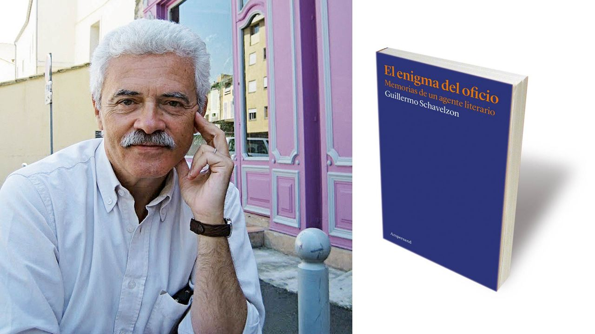
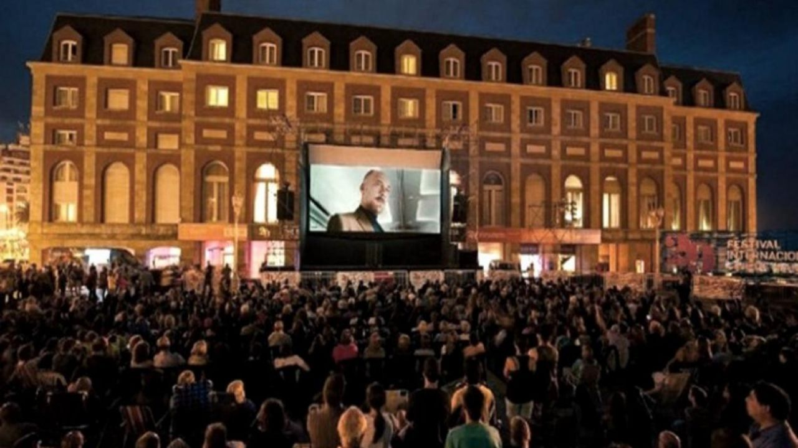
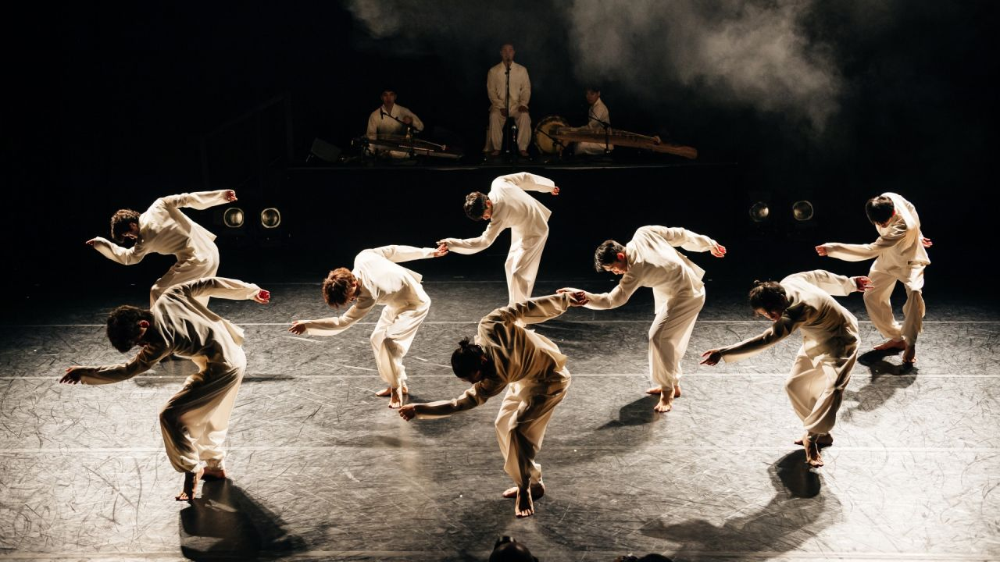
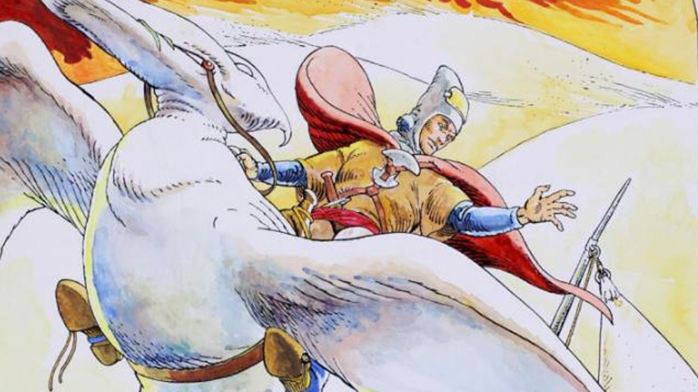
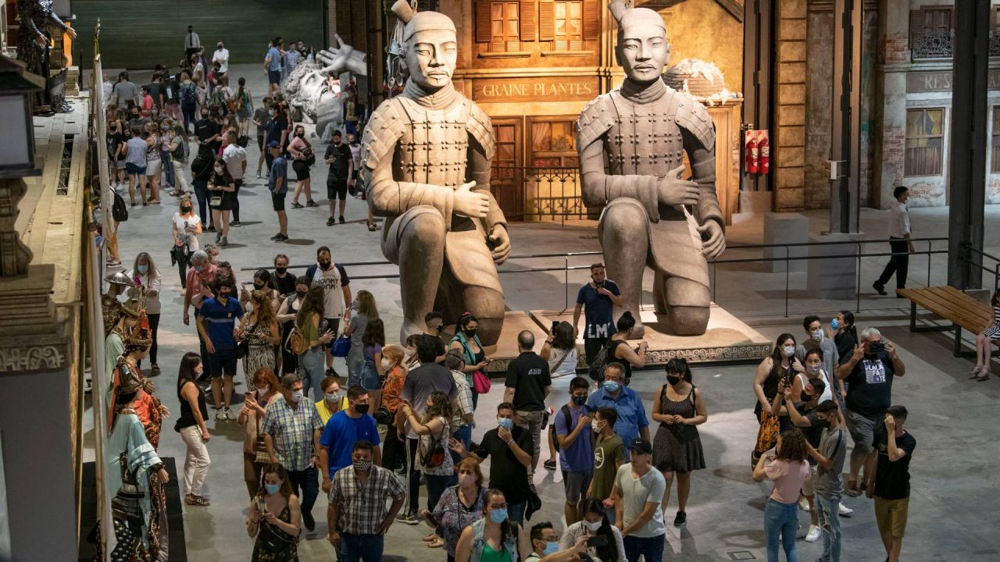
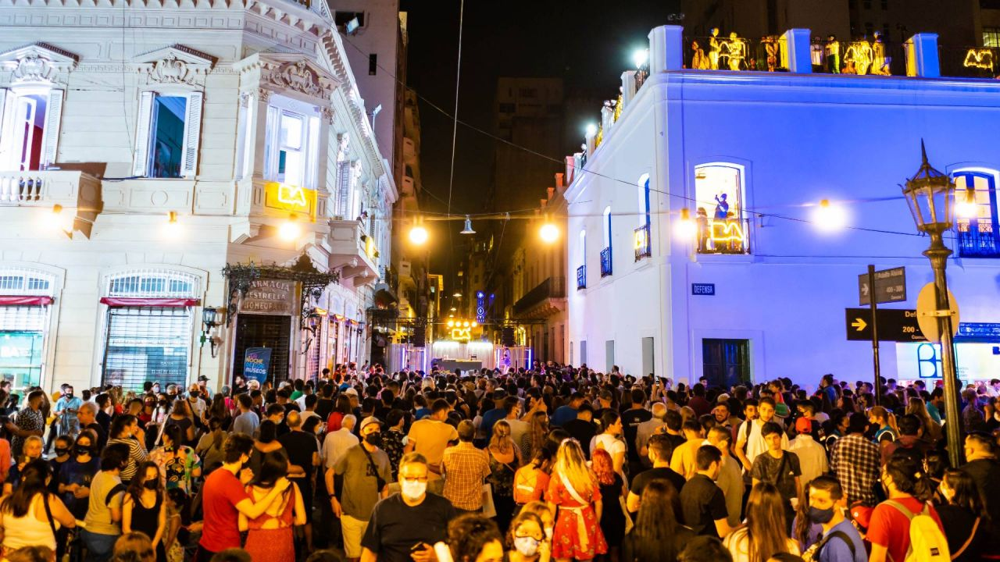

CULTURA
Noticia 1
Guillermo Schavelzon: Secretos de un agente literario
Editor de larga trayectoria, hoy representa a los principales escritores argentinos. Memorias, algoritmos y el libro en tiempos digitales.
Noticia 2
Perón y el origen del Festival de Cine de Mar del Plata
El encuentro se celebrara del 3 al 13 de noviembre en la costa marplatense. Las estrellas que lo visitaron, desde Pasolini a Catherine Deneuve.
Noticia 3

"Maradona" y "Santa Evita" nominadas a los Premios Cóndor de Plata
Por primera vez la Asociación de Cronistas Cinematográficos de Argentina nominó a las producciones audiovisuales en formato de serie, que se distinguirán con el codiciado premio.
Noticia 4
BA Danza Contemporánea 2022: lo mejor de las artes del movimiento
Lo mejor de la danza contemporánea en Buenos Aires, del 28 de octubre al 3 de noviembre.
Noticia 5
De Palermo a Montparnasse: los dibujantes argentinos que triunfan en Francia
Una exhibición dedicada a los mejores artistas argentinos del dibujo puede visitarse en la Alianza Francesa de Buenos Aires.
Noticia 6
La Noche de los Museos: los 10 imperdibles para visitar
La decimoctava edición del este evento porteño es el marco ideal para disfrutar de las actividades gratuitas y para todo público que ofrecerán el 22 de octubre a partir de las 19 horas.
Noticia 7
Comienza el Festival de Cine Inusual de Buenos Aires
La decimoséptima edición del evento se realizará del jueves 20 al domingo 30 de octubre. Y tendrá 3 sedes: Cine Gaumont, Centro Cultural San Martin y la Biblioteca del Congreso de la Nación.
Noticia 8
La Noche de los Museos: llega un clásico recorrido porteño
Qué actividades gratuitas podrán hacerse el próximo sábado 22 de octubre, a partir de las 19 hs en la Ciudad de Buenos Aires.